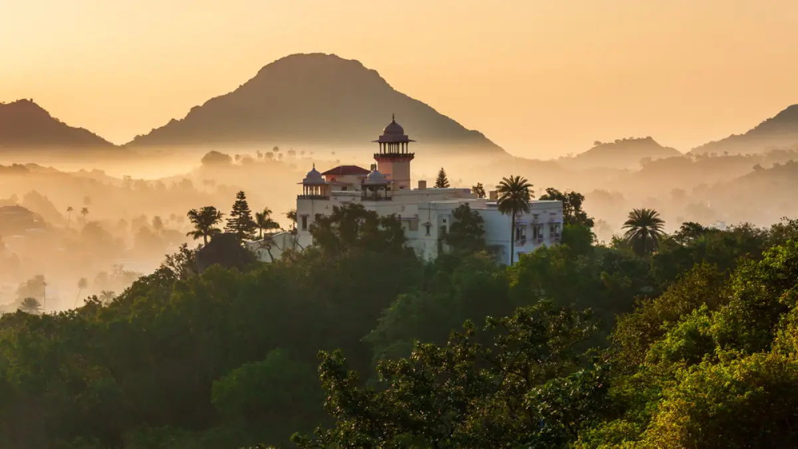

MOUNT ABU is a very beautiful place located in Rajasthan, India. Located on a high rocky plateau, this city experiences colder climates and offers pretty amazing sceneries. Well connected to other parts of the country, this city has been a popular tourist destination for various adventures and sightseeing.
Located on the beautiful Aravali Plateau, the city of Mount Abu is adorned by lush green forests and loaded with pristine beauty of lakes, architecture of temples and heritage of ancient forts and havelis. Exhibiting the best royalty of bygone times, this city is home to numerous marvels loaded with artistic features and picture worthy craftsmanship. Amidst this enchanting surroundings, the life here is very calm and the locals are friendly as well.
RANAKPUR is a small quaint town nestled amid the secluded valley of Aravali Ranges in Rajasthan. Situated around 96 km North of Udaipur in Pali district, it is an important destination for Jain pilgrims. The place presents a unique spectacle of verdant greenery and gushing streams, an unusual sight in Rajasthan. Immersed in the vibrant culture with a myriad of enrapturing beauty in store, Ranakpur has made its way on the list of must-visit destinations in Rajasthan.
It is named after Rana Kumbha, who donated some land for the place.
There are many temples dedicated to different Tirthankaras in Jainism like Adinatha, Parasnath and Chaumukha Temple with marvellous architectures. Rightly nicknamed as 'A spiritual oasis in Aravalli', Ranakpur is a place with mesmerising beauty that will leave you awe-inspired with a rejuvenated soul.

SAJJANGARH Set on top of a hill, Sajjangarh Fort looks majestic surrounded with mountains. The place was established in 1884 and since then has served as a beautiful summer haven to tourists. Local tourists flock the place during monsoons as rain only adds to the overall beauty of the place. Visitors can enjoy an exquisite panoramic view of the entire Udaipur from this hill fort.
ACHALGARH is one of the best hill stations in Rajasthan. It is nestled in the beautiful Aravalli range. Achalgarh looks like a subtle piece of paradise when viewed from the ground due to the serenity of the mountains. It is an ideal weekend getaway from the nearby towns like Jodhpur and Udaipur, as it is located just 11 km away from Mount Abu. The city of Mount Abu looks stunning and astonishing from the peak of Achalgarh. The Achalgarh hill station is situated from Udaipur at a distance of 173km. Therefore, it would be convenient for you to board a bus or a cab from the city. If you are an adventure enthusiast, then you can also indulge in trekking here. You can visit places like Achalgarh Fort, Mandakini Lake, Achaleshwar Mahadev Temple at